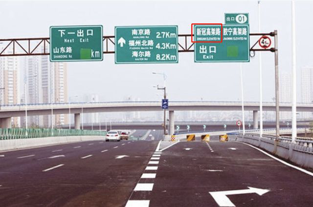

数说疫情0229：武汉拉锯阶段有望结束，海外警报升级
原文链接 备份链接 2月19日以来，武汉新增病例在300-500区间出现一个持续10天之久的“拉锯期”，不难想像战况之惨烈。但指标显示这种胶着局面将很快结束，进入一马平川阶段 文 |《财经》数据研究员 徐进 图 |《财经》 …
叶青武汉日记：是叫“抗疫日”，还是“公共卫生日”？
![]() 7038
7038
来源：正和岛
作者：叶青
02-29

1、武汉新增死亡37例
28日，农历正月初六。周五。阴雨。仿佛回到冬天。28日，全国新增确诊病例427例，新增死亡病例47例（湖北45例，北京1例，河南1例），新增疑似病例248例。截至28日，全国现有确诊病例37414例（其中重症病例7664例），累计治愈出院病例39002例，累计死亡病例2835例，累计报告确诊病例79251例，现有疑似病例1418例。湖北新增确诊病例423例（武汉420例，27日313例），新增治愈出院病例2492例（武汉1726例，27日2498例），新增死亡病例45例（武汉37例，27日28例），现有确诊病例34715例（武汉28836例），其中重症病例7370例（武汉6585例）。累计治愈出院病例28895例（武汉17552例），累计死亡病例2727例（武汉2169例），累计确诊病例66337例（武汉48557例）。新增疑似病例159例（武汉114例），现有疑似病例1171例（武汉788例）。以前，我们了解比较多的是中国日产口罩7800万。目前工信部监测调度的国内重点医用防护服企业日产量已达31.8万件，27日运抵湖北26.3万件。口罩的价格在美国已经高涨了。美国休斯顿民众已排起长队抢购N95口罩。在Holcombe医疗器械商店，一只N95口罩的售价在20至25美元之间。口罩需求量在1月开始猛增。此前，一包两只N95口罩的价格为8美元。为了减少接触，骑单车的人也多了。根据哈啰单车的数据，自2月10日企业复工首日以来，北京的共享单车需求量持续攀升，27日的骑行量比9日上涨了137%，其中26日上涨156%，达到复工以来的骑行峰值。
2、公共卫生日
不久前，22位全国政协委员建议把1月23日设为“抗疫日”。近日，李立明、姜庆五、沈洪兵等16位专家学者联名建议在1月23日设立“国家公共卫生日”。理由：一是2019年底，中国爆发了罕见的新冠肺炎疫情，成为现代中国公共卫生史上的重大事件。二是十分巧合的是，在18 年前武汉“封城”的同一天（即 2002 年 1 月 23 日），具有现代意义的“中国疾病预防控制中心”在人民大会堂隆重成立。三是公共卫生的发展不是一时的目标，而是一个国家和民族的长期着眼点。这个建议非常好，就是多了一个名字。看最后怎么定。为了培养公共卫生安全人才，教育部决定：今年硕士研究生招生规模增加18.9万，向预防医学、应急管理、养老服务管理、电子商务等专业倾斜。重点向中西部和东北地区倾斜。
3、建设无疫情小区
一些滞留在汉的外地人员，及时获得了街道、社区和有关单位的帮助，基本生活有了保障。分析发现，他们滞留在汉的原因是五花八门：——1月21日，聂明和妻子带着两个多月的孩子来到武汉儿童医院求医，等到孩子完全治愈出院时，已是2月9日。——双龙一家春节前到杭州参加表妹的婚礼，大年三十回老家时，途经武汉误下高速，滞留在江夏区法泗街的一家旅馆。——8位农民工其中7人来自安徽1人来自重庆，春节前从当地来汉参与地铁项目建设并负责在春节期间值班，参加方舱医院的建设。——24岁的杨立是孝感云梦人，毕业于武昌职业学院机电专业。1月初，来汉与同学聚会，本打算23日回老家过年。通过线上招聘成功求职，已在一线奋战23天。省新冠肺炎疫情防控指挥部近日印发通知，对省内必需返岗人员安全有序流动工作作出部署。一是明确流动人员范围。首批流动人员为各地保障疫情防控、公共事业运行、群众生活必需以及其他涉及重要国计民生相关企业的返岗员工。二是明确具体工作流程。由用工单位提出返岗申请，报所在地县（市、区）指挥部审核。由用工单位通知必需返岗人员通过“鄂汇办”APP或“支付宝”网络平台申领健康码。三是明确交通组织方式。鼓励以员工自驾方式或用工单位“点对点”包车方式实施返程。看来有所松动。恢复经济也很重要。针对复工复产中是否会发生气溶胶传播的问题，科技部社会发展科技司司长吴远彬28日表示，气溶胶传播需要满足密闭空间、较长时间和高浓度病毒三个条件，在极端条件下才有传播可能。普通人在通风条件良好的日常生活中，传播可能性很小，几乎没有气溶胶感染风险。28日，王忠林书记主持召开市新冠肺炎疫情防控指挥部例会，专题研究我市无疫情小区（村、社区、街道、城区）创建工作。这是一个好消息。如何推进无疫情小区创建工作？王忠林部署——要严格创建标准，科学制定认定条件；广泛发动，形成声势，营造家喻户晓、人人皆知的创建氛围，让每一位小区成员都行动起来，一起保护我们共同的家园；严格奖惩，组织、激励、引导无疫情小区创建。早在24日，蔡甸区新冠肺炎疫情防控指挥部办公室发布《关于全区无新冠肺炎确诊病例、疑似病例以及防控管理优秀的物业小区的公示》。对全区无新冠肺炎确诊病例、疑似病例以及防控管理优秀的物业小区一次性奖励5万元。相当于提前开始无疫情小区的创建工作。该区是远城区，好管控一些。在团购菜包之后，武汉人发明了“隔空”小菜场。28日上午，刚买完菜的张女士告诉记者，她已在小区指定的地方买了3次菜，“26号才买了一回，土豆4块，韭菜8块，泥蒿10块，价格还是蛮合理的。”小区指定这块区域约半个篮球场大小，两面临墙，背靠封闭的小区铁门，面对居民楼方向，由一道过膝高围栏隔开，居民们站在围栏外，依次上前隔空看菜购物，而两名商贩则根据居民的要求打包算账。其他在线外等候的居民都间隔2米以上排队。车站街从农贸市场的商户中选取了31家有品质口碑的蔬菜、禽肉商户，以平均每个社区有5家供应商为原则，分片进入5个社区的23个小区直供。十多天前，我到超市买菜，就在思考这个方法。超市外往往都有停车场，大家在空地上买菜，肯定比室内安全。关键是保持距离。距离产生美。
4、好看的数据
28日下午，国务院新闻办公室在汉举行新闻发布会，透露了比较好的数据：重症治愈率从14%到64%的转变。核酸检测能力每日达到2万人份。武汉疫情得到有力控制。目前新增病例80-90%由疑似病例转来。目前已经建成16家方舱医院，实际开放床位13000多张，累计收治患者12000人。现在方舱还有7600名患者，空余床位5600张，实现了床等人。收治重症病人床位超过9000张。到武汉的医护人员已经有4.2万人。新加入的医护人员化整为零地编组到早期到达的医疗队中，扩充人员、拉长工作排班频次。以甘肃医疗队为例，医生工作一天可以休息一天半到两天，护士工作一天可以休息两天半到三天。国家卫健委表态：在湖北的一线医护人员，临时性工作补助标准提高一倍，薪酬待遇提高两倍，扩大卫生防疫津贴发放范围，确保覆盖到所有一线医护人员。湖北除武汉以外市州局部爆发态势得到遏制社区是联防联控第一线，在武汉构建社区“五包一”管理模式。即一个社区干部、一个社区网格员、一个社区医务人员、一个社区民警、一个志愿者，五个人从不同的角度帮助一个重点人员。继续重点选派重症医学和呼吸科医护人员赴汉支援。……有的谣言，往往带有美好的“愿望”。利用人们善良的心理，在推销某种产品。28日下午，一则关于新型冠状病毒肺炎病患遗体解剖发现的传言出现在网络上，随后被某微博大V转发，引发广泛关注。该传言称，遗体解剖发现，新冠肺炎死者肺部有大量痰栓，痰栓导致缺氧是死因。称痰栓出现是因为使用了呼吸机，而改用吸痰机后，“武汉今天死亡人数首次下降一半，从每天一百多人，突降至五十多人”。还特意点出这一遗体解剖发现要感谢“同济法医系刘良教授团队”。在微博上，不少医生也指出了这一说法的荒谬之处，称“使用呼吸机治疗时，吸痰是常规操作”“负压吸痰器与呼吸机本身就是配合使用的”等等。记者搜索发现，这一传言最早来自于境外社交媒体。真是人心妥测。
5、专门给医护人员修眼镜的武汉人
丁淑怡是浙江大学医学院附属第一医院驰援武汉的护士，眼镜坏了，她想不到的是，第二天中午，她的问题就被人解决了。而这一副小小的眼镜，是杭州武汉两地、六位成人、一位高中生共同努力的结果。我们来看看这个感人的过程：晚上10点，由于长期戴护目镜，丁淑怡眼镜鼻托的螺丝掉落了。她坚持到凌晨3点下班。回到酒店的丁淑怡焦虑得睡不着觉，她本能地给在杭州家里的老公褚陈恩打电话。

他先在朋友圈发消息，询问有没有人能帮忙，很快有人回复了。但虽然联系到了在武汉的人，因为出不了门，也没办法。褚陈恩在网上一家家搜索，找到四五家丁淑怡酒店附近的眼镜店，并把电话保存下来。第二天早上，他打的第一个电话就接通了。接电话的老板一听，非常热心，他说他现在出不了小区，所以帮不上忙。但他给了一个电话，说这是位眼科医生，可能有办法。7点多，他拨通了那个归属地是武汉的手机号。主人是45岁的陈庆丰，他是一位眼科医生，温州人，在武汉生活了十多年。立刻答应。从大年初一到现在，陈庆丰和哥哥陈庆申已经为20多位医护人员修配眼镜，他们都是从外地来支援武汉的。早上10点左右，丁淑怡接到了陈庆丰的电话。她提出要准备一副，并视频，看了模样。中午12点一刻，陈庆申带着配好的眼镜和朋友王金国一起赶往丁淑怡所在的酒店。那天，是王金国读高中的儿子的生日，出门前，他对儿子说，自己要去给一位阿姨送眼镜，生日蛋糕先不买了。他儿子知道事情原委后，说：爸爸，我不买蛋糕了，我买眼镜！我要把那副眼镜送给支援武汉的医疗队阿姨。这副眼镜的钱不要陈叔叔出，我来出。因此，王金国对她说，“要感谢你给我的孩子一个做事和知道感恩的机会，是你启发了他的爱心。”一个小时后，那副坏掉的眼镜也被修好，送到酒店。陈庆丰还留下了几个螺丝钉和一个小小的螺丝刀。丁淑怡给陈庆丰兄弟写了一封长长的感谢信：“很多人都说我们医护人员很辛苦，给了我们很多赞美。但是我觉得武汉这里有很多像他们这样普通的英雄，在默默付出，应该被更多人知道。”这是对武汉人最高的褒奖。现在，有了大量的武汉日记，大家可以从日记中看武汉。我把日记分为七种：本地医生日记，外地医生日记，护士日记，病人日记，记者日记，方方日记，叶青日记。方方是党外作家，擅长从精神层面分析武汉。我是经济研究者，喜欢从经济角度分析武汉。没有什么高低贵贱之分。我在快手直播中建议，新媒体增加一个栏目——“武汉日记”。《湖北权威发布》发表文章《负重前行，期待疫去花开——来自省荣军医院的战“疫”故事》。由于荣军医院位于高架桥边上，每天路过，就特别关注。第一篇就是本地医生日记，大家读片段之后，可以了解最初的情况。坚定信心，我们不孤单讲述者：王中伟人物名片：48岁，发热一区党支部书记、主任1月21日，是最煎熬的一天！由于疫情加重，14张床位很快就收满，还有大量的疑似患者要住进来。但此时，清洁工早回家了，没人做卫生，这些活只能由医务人员完成。当天晚上，两名年轻护士突然号啕大哭……我和护士长带头讲笑话，想让她们放松下来，但收效不明显。吃过晚餐，我和护士长商量，利用有限的空闲时间，跟她们进行一些轻松的互动小游戏。慢慢地，她们终于笑了。有位老奶奶在病床上有些害怕，我跟老人家说：“核酸检测结果并不代表疾病的轻重，只是疾病分型而已。”耐心解释后，老奶奶神色轻松许多，我也放下心来。接受治疗，信心很重要。一个多月来，我们科室不仅没有一人当逃兵，还有9位同志主动递交了入党申请书。国家知识产权局宣布：已对“火神山”等近1000件与新冠肺炎疫情相关的、易产生不良影响的商标注册申请实施了管控，将依法处理这些商标注册申请。看来喜欢趁火打劫的不止一家。但是，青岛却莫名其妙地“躺枪”。

2月18日，一网友致信青岛市政府信箱称，“新冠疫情影响严重，老百姓对‘新冠’非常厌恶，家住青岛市北区新冠高架路附近，每天上下班都需要通行‘新冠’高架路，心里感觉总不得劲。我们坚信‘武汉’必将战胜‘新冠’，为此建议青岛市将‘新冠’高架路更名为‘武汉’高架路，以表示武汉必胜，中国必胜的信心。”25日，青岛市政府办公厅政务服务热线办公室发布了对此信件的答复信息：新冠高架桥是2011年由市政府命名，命名合法合规，为了保持地名的稳定性，可改可不改的地名，一般不予更改。这算是一个小插曲吧。
6、我自己的变化
给在三亚呆了40多天的朋友打电话问候一下。 一家三口，已经花了上十万。春节期间，房价一间1500元左右，现在三亚的湖北人集中在两家豪华酒店，房价降到300多。幸亏三亚市委书记是从湖北去的。 最近，我做了几件事： 原则上，上班时间局领导要在办公室。要有单位证明才能够出小区与进办公室所在小区。出小区登记温度、手机、楼层等情况。 直播讲课，讲了15天左右的课，每天晚上9-10点，分析疫情，分析经济形势。 学会快手短视频直播，每一分钟讲一个经济观点。赶时髦。 自己理发。拿着电推子，对着镜子，安装好控制长度的梳子，理出平头。效果还可以。
7、小结
武汉的死亡数量有所增加，还是较小的数字。
治愈率提高到64%，是非常好的消息。
[](javascript: void(0);)
原文链接 备份链接 2月19日以来，武汉新增病例在300-500区间出现一个持续10天之久的“拉锯期”，不难想像战况之惨烈。但指标显示这种胶着局面将很快结束，进入一马平川阶段 文 |《财经》数据研究员 徐进 图 |《财经》 …
原文链接 备份链接 文 | 《财经》数据研究员 徐进 图 | 《财经》视觉中心 编辑 | 谢丽容 今日，我们来重点说说湖北的疫情数据。根据湖北卫健委的官方数据，2月12日0时-24时，湖北省新增新冠肺炎病例14840例(含临床诊断病 …
原文链接 备份链接 文 |《财经》数据研究员 徐进 图 |《财经》视觉中心 编辑 | 谢丽容 1. 今日概况： 根据国家卫健委数据，2月11日0—24时，31个省（自治区、直辖市）和新疆生产建设兵团报告，新增确诊病例2015例（湖 …
原文链接 备份链接 【财新网】（记者 赵宁 方祖望）毗邻湖北随州、孝感，距武汉市区仅两百余公里，河南“南大门”信阳疫情渐趋严峻。截至2月8日24时，信阳确诊病例破两百，达到205例，是河南最严重的地市。信阳已连续9天新增确诊病例超过两位 …
原文链接 备份链接 美联储2月28日市场交易结束时进行了救援，发出强烈信号会尽快降息。这会使金融市场至少平静几天。市场随后反弹还是继续下滑，取决于美国及全球新冠肺炎疫情的走势 文 |《财经》特派记者 金焱 发自华盛顿 编辑 | 苏琦 世 …